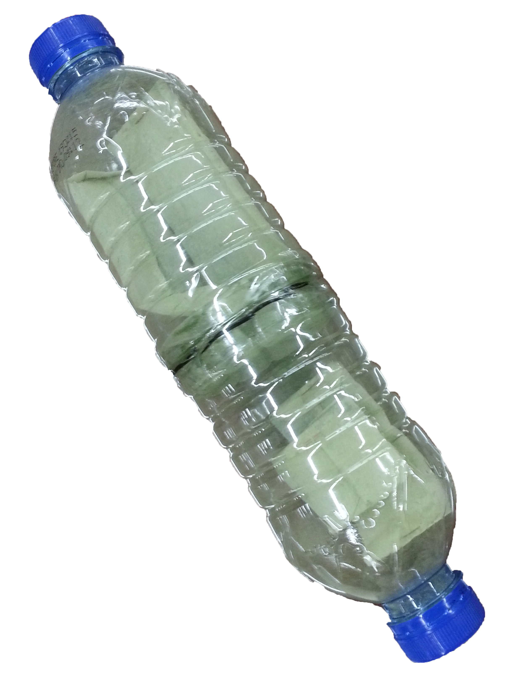

Navigation
Navigation
Results and Applications
Comparison of results
In order to determine the best bioremediator, 30 readings for live and dead algae in the different concentrations were obtained, after which the biosorption capacity and efficiency for both live and dead algae was calculated and compared. A comparison between both types of heavy metal ions were then carried out. In order to verify whether the difference between the efficiency and the capacity of the samples were statistically significant, a two-sample T-test was used to obtain the p-value.
Results
Figure 1 Graph showing the effect of aliveness of Ulva on the concentration of Copper(II) ions absorbed by Ulva in 1.3 ppm Copper(II) solution after 5 days
Figure 2 Graph showing the effect of aliveness of Ulva on the concentration of Copper(II) ions absorbed by Ulva in 25 ppm Copper(II) solution after 5 days
Figure 3 Graph showing the effect of aliveness of Ulva on the Biosorption Efficiency of Ulva in 1.3 ppm Copper(II) solution
Figure 4 Graph showing the effect of aliveness of Ulva on the Biosorption Efficiency of Ulva in 25 ppm Copper(II) solution
Figure 5 Graph showing the effect of aliveness of Ulva on the Biosorption Capacity of Ulva in 1.3 ppm Copper(II) solution
Figure 6 Graph showing the effect of aliveness of Ulva on the Biosorption Capacity of Ulva in 25 ppm Copper(II) solution
Figure 7 Graph showing concentration Copper(II) ions in 1.3 ppm Copper(II) solution over time
Figure 8 Graph showing concentration Copper(II) ions in 25 ppm Copper(II) solution over time
Discussions
From the results we have obtained, we realised that the live algae performed better than the dead and harvested algae when it comes to the bioremediation of Copper(II) ions.
As shown from our results, the live algae had a significantly higher biosorption efficiencies and capacity as compared to the dead algae. For those in which the dead performed better, a t-test was conducted and the p-value of more than 0.05 suggested that the results were insignificant.
From Figures 7 and 8, it was also observed that at higher concentrations, there was a much more of a significant difference between the dead and alive. This could be because of the saturation of binding sites on the algal membranes in the dead algae samples.
Since the live algae was able to bioremediate Cu2+ ions better than dead algae, the improved results was most likely due to the mechanism of uptake that is solely available in live algae and not dead algae, which is the ability to take in the heavy metal ions and assimilate them into the organism tissues.
These results were probably because at this lower concentration, the greater total surface area of the ground-up algae played a bigger role, allowing for more Copper 2+ ions to adsorb onto its surface, however the mechanism of absorption, of the algae assimilating the heavy metal ions into their tissues plays a much larger role at higher concentration. This could be due to a steeper diffusion gradient of the heavy metal ions between the tissues and the solution, resulting in more heavy metal ions diffusing into the body.
~ In Other Words ~
Conclusion
- Live algae are better bioremediators than dead algae, especially at higher concentrations
- Dead has increased surface area for biosorption at low concentration. But at high concentrations, the additional mechanism plays a more significant role and uptakes more heavy metal ions.
- This can be seen from the difference in the bioremediation efficiencies of the two types of algae.
- Our statistical test further affirms our conclusion by showing that live algae are significantly better bioremediators than dead algae.
Limitations
For strontium, the results were inconclusive as the xylenol indicator presented too much fluctuation and the results were hence unable to be used for determination of whether the live or the dead and harvested algae was better.
The fluctuation could be due to factors such as temperature and relatively high concentrations of strontium, however, even after the con centration of strontium solution was lowered, no correlation was found and hence it was not possible to reliably and consistently extrapolate the data. In fact, the standard deviation was as much as 14 ppm for the live algae tests. Until a more suitable indicator is found, results for strontium remain difficult to obtain.
After drawing out solutions for testing, the amount of solution left in was reduced, thereby increasing algae-to-solution ratio, which may affect the results obtained.
The dry mass to wet mass ratio may vary for every algal tissue, hence the average obtained may not be accurate, hence there could be more, or less algal tissue used for bioremediation in the tests conducted, and more accurate tests could be conducted, if possible.
Applications
With such results, products such as a bioreactor could be developed with algae at cheap cost, especially if eutrophication has resulted in abundant growth of algae in certain areas. Currently a prototype has been developed by putting powdered algae in teabags and placing them in a structure made using recycled plastic bottles. ( → )
In the middle layer, algae is concentrated to increase remediation properties. The middle piece also contains small holes to allow sufficient time for the algae in the center to remediate the heavy metal ions. This was made just as a proof of concept. Extensively testing and developing the prototype could take much more time.
Beyond this project, bioremediation remains an avenue for exploration in reducing human impacts on the environment.
This study could be repeated with other varying concentrations of Cu2+ and expanded to other heavy metal ions such as Zn2+ or Pb2+. Other species and genus of algae such as Sargassum, including other marine organisms could also be used.
For more detailed information, you can proceed to our Downloads Page to download our Research Paper